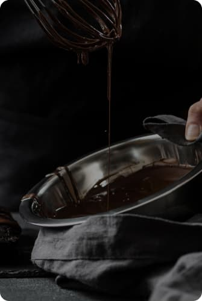

+<section class="container howmade-container">
  <h2 class="howmade-titel">hOW IT’S made?</h2>
  <div class="howmade-box">
   <div>
    <div class="howmade-icons-box">
        <svg class="howmade-icons" width="35" height="35">
          <use href="../img/sprite.svg#icon-emoji-chocolate"></use>
        </svg>
      </div>
    <picture>
      <source
        srcset="
          ../img/howmade-img/howmade-desctop.jpg    1x,
          ../img/howmade-img/howmade-desctop@2x.jpg 2x
        "
        media="(min-width: 1200px)"
        type="image/jpg"
      />
      <source
        srcset="
          ../img/howmade-img/howmade-tab.jpg   1x,
          ../img/howmade-img/howmade-tab2@.jpg 2x
        "
        media="(min-width: 768px)"
        type="image/jpg"
      />
      <source
        srcset="
          ../img/howmade-img/howmade-mob.jpg   1x,
          ../img/howmade-img/howmade-mob2@.jpg 2x
        "
        media="(min-width: 375px)"
        type="image/jpg"
      />

      
    </picture>
</div>
    <div>
      <p class="howmade-list-titel">
        Try our chocolates today and discover the perfect balance of flavor
      </p>

      <ul class="howmade-list">
        <li class="howmade-list-items">
          Heat the milk in a saucepan without bringing it to a boil. Add sugar
          and cocoa powder.
        </li>
        <li class="howmade-list-items">
          "Mix" the milk mixture and already liquid butter. Mix thoroughly with
          a silicone spatula so that the mass becomes uniform and silky.
        </li>
        <li class="howmade-list-items">
          Heat the mixture over low heat, letting it barely boil.
        </li>
        <li class="howmade-list-items">
          Pour the chocolate into special containers (can be replaced with ice
          molds). Allow to cool and harden.
        </li>
      </ul>
    </div>
  </div>
</section>